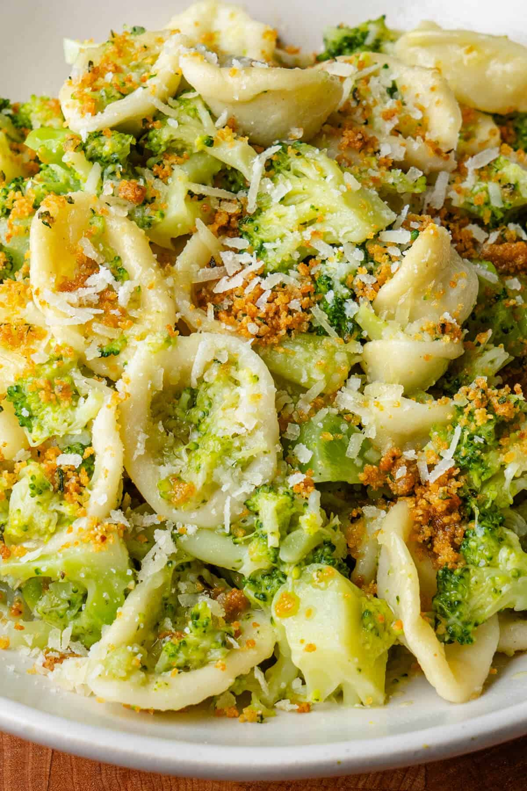

Broccoli Pasta
↩

Broccoli Pasta is a super nostalgic pasta dish that screams comfort food! It's a recipe that all children and
adults love and it's also really healthy too.
Ingredients
- 180 grams pasta
- 300 grams broccoli
- 2 garlic cloves
- 1 tablespoon extra virgin olive oil
- 40 grams freshly grated Parmigiano reggiano cheese (parmesan cheese)
- Salt and black pepper
- Garnish with pangrattato, extra parmesan cheese and red pepper flakes (optional)
Steps
- Dice the broccoli into small florets including cutting the stems into small cubes. Boil the broccoli florets
and stems in a large pot of salted water for about 5- 8 minutes until fork tender
- At the same time, dice the garlic cloves into cubes and sautee in a large pan or skillet with olive oil on a
low heat
- Add the cooked broccoli to the pan with a ladle of the cooking water and stir through
- Cook the pasta in the same boiling water until almost cooked ( a few minutes before the provided cooking
time on the package instructions) then drain and add to the pan with the broccoli.
- Add the freshly grated parmigiano cheese with a ladle of reserved pasta water and stir for a few minutes
over a medium heat. Add more pasta water as needed to finish cooking the pasta to al dente or to desired
consistency and to create a creamy sauce